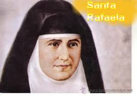
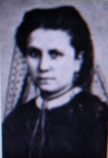
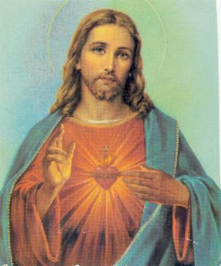
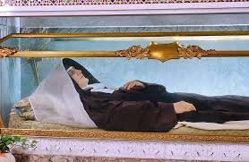
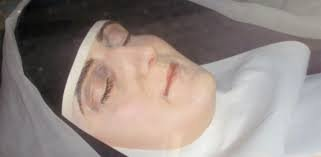

“SERVAS DO
SAGRADO
CORAÇÃO DE
JESUS”
PROMISSORA CONGREGAÇÃO
Em 1877, a Nova Congregação
passou a usar o nome de “IRMÃS REPARADORAS DO CORAÇÃO DE JESUS”, e
recebeu a plena aprovação do Cardeal Moreno, Arcebispo de Toledo. O propósito
desta Nova Congregação centrou-se primordialmente na adoração e exposição diária
do Santíssimo Sacramento. E externamente, o objetivo da Ordem era de abrir
Escolas para meninas pobres e prepará-las, tanto as meninas mais jovens, como as
mais velhas, para a Primeira Comunhão Eucarística. Além desta intensa atividade,
Rafaela trabalhou incansavelmente para o estabelecimento de novas Fundações, com
objetivo de conseguir a aprovação da Congregação Religiosa, pelo Vaticano. Com
este objetivo se esforçou incansavelmente no estabelecimento de novas fundações
abrindo Casa em Córdoba no ano 1881, em Jerez no ano 1882, em Bilbao no ano 1885,
e em Zaragoza no ano 1886. Todas as mencionadas Casas foram instaladas e permaneceram
em completo funcionamento. Foi necessário este esforço para poder receber o Decreto
do Papa com a aprovação formal em 1886. A aprovação definitiva aconteceu no ano 1887.
O Papa Leão XIII aprovou a Congregação Religiosa com o novo nome: “SERVAS DO
SAGRADO CORAÇÃO DE JESUS”, com Rafaela, como primeira Superiora Geral. E assim,
a 14 de abril de 1877 estabelecia-se em Madrid a primeira comunidade das “SERVAS
DO SAGRADO CORAÇÃO DE JESUS”, dedicadas a adorar o Santíssimo Sacramento e a
educar crianças e jovens, principalmente os pobres. Eram 18 Noviças, aprovadas pelo
Cardeal Moreno, que haviam começado aquele belo trabalho e nenhuma delas se perdera.
Arcebispo de Toledo. O propósito
desta Nova Congregação centrou-se primordialmente na adoração e exposição diária
do Santíssimo Sacramento. E externamente, o objetivo da Ordem era de abrir
Escolas para meninas pobres e prepará-las, tanto as meninas mais jovens, como as
mais velhas, para a Primeira Comunhão Eucarística. Além desta intensa atividade,
Rafaela trabalhou incansavelmente para o estabelecimento de novas Fundações, com
objetivo de conseguir a aprovação da Congregação Religiosa, pelo Vaticano. Com
este objetivo se esforçou incansavelmente no estabelecimento de novas fundações
abrindo Casa em Córdoba no ano 1881, em Jerez no ano 1882, em Bilbao no ano 1885,
e em Zaragoza no ano 1886. Todas as mencionadas Casas foram instaladas e permaneceram
em completo funcionamento. Foi necessário este esforço para poder receber o Decreto
do Papa com a aprovação formal em 1886. A aprovação definitiva aconteceu no ano 1887.
O Papa Leão XIII aprovou a Congregação Religiosa com o novo nome: “SERVAS DO
SAGRADO CORAÇÃO DE JESUS”, com Rafaela, como primeira Superiora Geral. E assim,
a 14 de abril de 1877 estabelecia-se em Madrid a primeira comunidade das “SERVAS
DO SAGRADO CORAÇÃO DE JESUS”, dedicadas a adorar o Santíssimo Sacramento e a
educar crianças e jovens, principalmente os pobres. Eram 18 Noviças, aprovadas pelo
Cardeal Moreno, que haviam começado aquele belo trabalho e nenhuma delas se perdera.
E a partir desta época, a
“Ordem das Servas do Sagrado Coração de JESUS” também estabeleceram Escolas
num nível social mais elevado, embora permanecessem fiéis ao propósito original
de um precioso trabalho educacional entre as jovens mais pobres.
No ano seguinte, em assembléia
realizada na Comunidade Religiosa, no dia 4 de Novembro de 1888, todas as Irmãs
fizeram a Profissão de Fé, e também, com a total presença da Comunidade Religiosa,
por unanimidade foi reafirmada Rafaela Maria em aclamação para Superiora Geral
da Congregação Religiosa, e sua irmã Dolores ficou como Ecônomo Geral da
Congregação.
UNIDA AO SENHOR
O grande desejo de Rafaela era
que, a começar pelas Irmãs, as pessoas olhassem e se unissem fervorosamente ao
ardente anseio do SAGRADO CORAÇÃO DE JESUS: “Que todos O conheçam e O amem”. Ela
seguia firme o seu caminho de oblação sabendo que era a única via para melhor se unir
a DEUS. Assim O confiava em seus exercícios espirituais. E DEUS misericórdia infinita
a escutou.
NOITE ESCURA
Em 1892 a Irmã Rafaela Maria estava
com 43 anos de idade, e por tudo que ocorreu em sua existência, ainda teria mais
32 anos de vida. Mas foi justamente nesta época que abateu sobre ela uma abominável
“Noite Escura”
. A Congregação estava num momento fecundo de ótimas
conquistas e com excelentes realizações, com todas as Casas nas diversas cidades
em animador progresso, inclusive com admirável acréscimo no número de Irmãs, quando
de repente, começaram a brotar terríveis ervas daninhas, fundamentadas na desconfiança,
na mentira e na incompreensão, que causou um impacto desagradável, com uma
“aniquilação progressiva e de
martírio na sombra”,
conforme as palavras do Sumo Pontífice Papa Pio XII, sobre algumas notícias que
chegaram a Roma.
A PERPLEXIDADE DE RAFAELA

Ela que sempre
foi uma jovem idealista, desejando o bem-estar de todos, jamais imaginou ter que
enfrentar conversas tão mesquinhas e situações tão desprezíveis, que jamais
supôs mesmo nas difíceis circunstâncias da luta intensa que enfrentou, junto com
suas colegas, para edificar a Congregação Religiosa. E por incrível que possa
parecer, também estava envolvida na terrível intriga, a sua querida companheira
Dolores, sua estimada irmã. Naquele mesmo ano de 1893, Dolores, ou seja, a
Irmã Maria Del Pilar, passou a externar uma visão distorcida sobre Rafaela,
afirmando que ela cometia muitos erros na administração econômica da Congregação
e que poderiam representar sérios prejuízos para a Comunidade Religiosa. Mas
isto é incrível!... Como imaginar um comportamento destes em Rafaela? Ela que
como uma Leoa feroz, fundou a Congregação, viajou pela Espanha divulgando a obra
e abrindo Novas Casas em diversas cidades! Tudo com um único e santo objetivo de
ampliar e dar consistência a sua Obra, sobretudo, visando à aprovação oficial da
mesma pelo Vaticano, buscando propiciar maior honra e glória ao SAGRADO CORAÇÃO
DE JESUS! Como é possível uma pessoa assim, ser acusada de incompetente? E a
maldade se alastrou violentamente e justamente envenenou as Conselheiras do
Instituto, sempre com o firme e maldoso objetivo de denegrir Rafaela e tirá-la
do cargo de Superiora da Comunidade. Aquelas conversas causaram um mal estar geral
tão grande, que alterou completamente a atmosfera do ambiente agradável e fraterno
que existia no cotidiano da Congregação. E assim, depois de muitas intrigas, as
Conselheiras acabaram acreditando e convidaram a Madre Superiora Rafaela Maria
para conversar.
MADRE RAFAELA DEIXA A DIREÇÃO
DA CONGREGAÇÃO
Madre Rafaela
desapontada com toda aquela celeuma de cruéis afirmações, antes de ser
confrontada com aquele assunto desagradável, renunciou ao cargo de Superiora.
Sua Irmã Dolores, que era a sua auxiliar direta e conhecia toda a organização
administrativa, foi escolhida para ser a nova Superiora. Assim, foi preparada e
realizada a reunião para oficialização dos fatos. Rafaela não compareceu. Na
mesinha do seu pequeno quarto assinou o documento de demissão. Por determinação
do estatuto da Ordem Religiosa, enviaram ao Vaticano a ata da reunião e a carta
de demissão assinada por Rafaela, assim como o documento referente à posse de
Dolores, a nova Superiora Geral da Comunidade Religiosa.
HUMILHAÇÃO E
MARAVILHOSA HUMILDADE
Santa Rafaela viveu mais 32 anos
desprezada e esquecida por todos, num pequeno quarto das instalações da Ordem
Religiosa. Ninguém a procurava. Ali permaneceu sempre sozinha e abandonada.
Até as refeições não eram no refeitório da Comunidade. Uma das auxiliares da cozinha
levava no quarto para ela. Porém, sem guardar mágoas ou qualquer rancor, ela
dizia estar feliz, por poder se dedicar integralmente a oração, assim como dar o
bom exemplo para todas as Irmãs, mantendo de modo admirável, um coração humilde
e sem ressentimentos. Viveu sem cultivar amarguras, sem fazer críticas e sem
alimentar nenhuma mágoa. Mantinha um silêncio completo e total. Só dizia o
estritamente necessário. Assim, ela também pode ver e apreciar o desenvolvimento
maravilhoso da sua Obra, que era fruto precioso do seu coração e da Vontade de
DEUS. Ela via em tudo a Mão de NOSSO SENHOR agindo em sua vida, modelando-a para
a Vida Eterna. E por isso mesmo, sorria interiormente, porque sabia que tudo
aquilo era o desejo Divino, que a Obra devia sempre crescer, florescer e
espalhar pelo mundo a Vontade e o Amor de DEUS por todos nós. Sua dor, que era
grande e profunda, unida a sua perfeita e silenciosa aceitação, certamente foram
os adubos mais férteis para o crescimento da preciosa Obra.
EXISTÊNCIA EXEMPLAR
Nos trinta e dois anos de
isolamento e marginalização, Santa Rafaela não teve nenhum tipo de consolo na
Casa da Congregação, como também nem lhe ofereceram a oportunidade para visitar
as outras Casas da Congregação na Espanha. Na época quando governava a
Instituição, em todas as casas por onde passava, sempre deixou um magnífico
exemplo de santidade, de muita oração e de humildade. Agora, completamente
abandonada e esquecida, só fazia os trabalhos mais humildes, também os mais
duros, exatamente aqueles que eram rejeitados pelas outras religiosas. E muitas
vezes ainda sofria humilhações, enquanto se imolava com uma vivência heróica,
revelando plena humildade e se mostrando sempre pronta a conceder o perdão. Tudo
o que fazia realizava com alegria de coração, deixando transparecer que tinha
uma profunda vida interior unida a DEUS. Esta realidade lhe consolava e
satisfazia deliciosamente o seu espírito, deixando-a perceber que as glórias
humanas são apenas fatos que podem produzir alegrias, mas não produzem a
necessária felicidade permanente e duradoura. Na sua solidão e silêncio renovava
o seu espírito de reparação, sempre rezando, fazendo sacrifícios e suplicando a
misericórdia Divina pelos pecados do mundo, e assim, permanecia pensando
unicamente na glória de DEUS.

SUA IRMÃ DOLORES
Ela assumiu o comando de
Superiora Geral da Congregação no mesmo ano de 1893. Governou a Congregação por
dez anos (até 1903), quando foi afastada e enviada para uma Casa da Ordem
Religiosa em Valladolid, também na Espanha.
MUDANÇA PARA ROMA E
FINALMENTE A ETERNIDADE
Rafaela mudou-se para Roma, onde
passou o resto da sua vida em reclusão na Casa Mãe da Congregação. Teve apenas
dois consolos externos que alegraram o seu
coração: fez uma peregrinação
a Assis e a Loreto na Itália, onde teve a oportunidade de rezar diante daqueles
famosos Santuários Cristãos; e também, fez uma viagem a Espanha, onde teve oportunidade
de visitar as Casas da Congregação. As religiosas mais jovens puderam comprovar
o que tinham ouvido das Irmãs mais idosas, os comentários sobre a Fundadora. Ela
nunca mais exerceu a autoridade no Instituto, mas sua presença edificava a todas
as Irmãs, ao observarem as suas ações revestidas de plena santidade. Por
isso, nas Casas que visitou deixou uma imagem pura de santa edificação. Por
causa das longas horas que passava ajoelhada diante de JESUS SACRAMENTADO,
contraiu uma grave doença no joelho direito. Tal enfermidade lhe causava muitas
dores, as quais com o tempo se tornaram insuportáveis. E assim, sentindo muitas
dores e em pleno silêncio, ela passou os últimos meses da sua vida. Porém, cheia
de fé, dizia:"Aceitei
todas as coisas como se viessem das Mãos de DEUS".
.
Suas palavras com plena
consciência: «En el no
hacer está mi mayor martirio. DIOS me pide ser Santa. Yo no puedo dejar de serlo
sin despreciar SU Santo querer. Si logro ser Santa, hago más por la Congregación,
por las hermanas y por el prójimo, que si estuviese empleada en los oficios de
mayor celo. Mi espíritu gime, pero vale más agradar a JESÚS gimiendo que riendo
[…]. El gozo será en la otra vida. JESÚS me ama mucho y esto me debe alentar
siempre»
(Tradução das palavras, de como ela
abraçou a Cruz do SENHOR).
"Não fazer (nada) é o meu maior martírio. DEUS me pede para ser
Santa. Eu não posso deixar de ser uma Santa sem desprezar o SEU Santo Amor. Se posso
ser Santa, faço mais pela Congregação, pelas Irmãs e pelo meu próximo, do que se
estivesse trabalhando nos ofícios mais zelosos. Meu espírito geme, mas é
melhor agradar a JESUS gemendo do que rindo [...]. A alegria estará na próxima
vida. JESUS me ama muito e isso deve sempre me encorajar».
Rafaela Maria morreu santamente
na Casa Mãe da Congregação em Roma no dia 06 de Janeiro de 1925 as 18 horas.
Somente depois do seu falecimento
foi que as autoridades eclesiásticas compreenderam com clareza, o que de fato
havia acontecido com a Superiora Rafaela, na Congregação fundada por ela mesma.
Isto aconteceu a partir do momento em que foi aberto o Processo Diocesano que
evidenciou a Santidade Dela.


BEATIFICAÇÃO E CANONIZAÇÃO
Ela foi Beatificada no dia 18 de
Maio de 1952 pelo Papa Pio XII. Também nesta data foi feito o translado dos seus
restos mortais. Foi Canonizada no dia 23 de Janeiro 1977 pelo Papa Paulo VI.
Esta última data, por coincidência, também marcava o centenário de fundação do
INSTITUTO DAS SERVAS DO SAGRADO CORAÇÃO DE JESUS.
Santa Rafaela está sepultada na
Casa Generalícia (Casa Mãe) da Congregação em Roma, e como ela faleceu no dia 06
de Janeiro de 1925, sua data coincide com a Festa da Epifania de JESUS.
UM FATO MUITO COMENTADO
Pouco tempo depois, quase no
final da Segunda Grande Guerra Mundial (1939-1949), um avião norte americano,
lançando bombas sobre Roma, procurando destruir um armazém de munições nazista,
atingiu o Cemitério onde Santa Rafaela Maria estava sepultada. Porém, o túmulo
dela não foi atingido, foi preservado milagrosamente. Quando abriram a sepultura
e fizeram a exumação, encontraram o corpo da Santa, perfeitamente incorrupto
e com uma impressionante flexibilidade, como se fosse uma pessoa normal,
que estivesse dormindo.

 PRÓXIMA PÁGINA
PRÓXIMA PÁGINA
PÁGINA ANTERIOR
RETORNA AO ÍNDICE